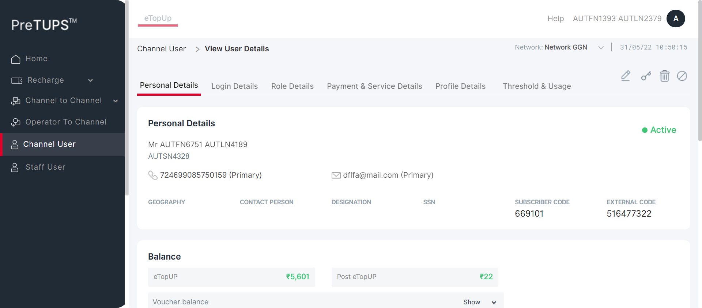
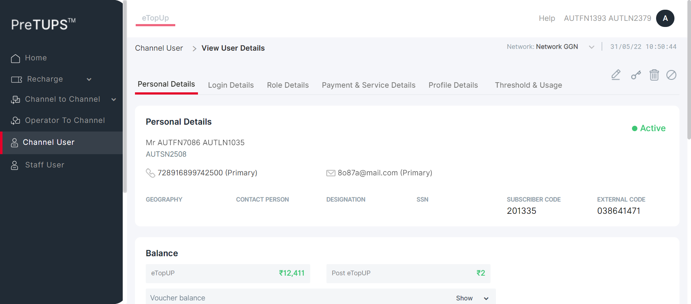
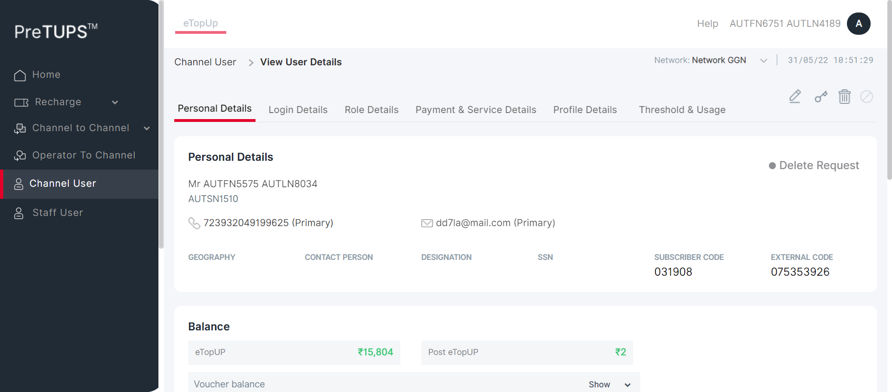
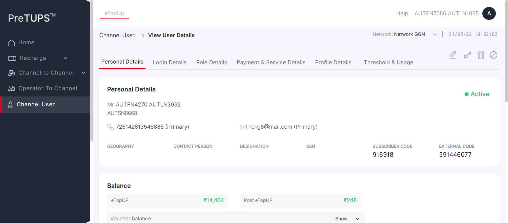

| Status | Timestamp | Details |
|---|---|---|
| info_outline | 10:49:44 AM | Category Code for Super Distributor: DIST |
| info_outline | 10:49:44 AM | Entered webInterface(Super Distributor) |
| info_outline | 10:49:44 AM | webInterface() :: select query: Select WEB_INTERFACE_ALLOWED from categories where category_name= ? |
| info_outline | 10:49:44 AM | Database Returns: WEB_INTERFACE_ALLOWED (Y) |
| info_outline | 10:49:44 AM | Exited webInterface() |
| info_outline | 10:49:44 AM | Entered PerformViewChannelUserByUserName(Super Distributor, Dealer, 724699085750159, 1357, Root, 2) |
| info_outline | 10:49:44 AM | LoginID found as: AUT_48675 |
| info_outline | 10:49:44 AM | Password found as: com@2468 |
| info_outline | 10:49:44 AM | Username found as: AUTFN1393 AUTLN2379 |
| info_outline | 10:49:45 AM | Trying to select Language |
| info_outline | 10:49:46 AM | Language selected successfully as: English |
| info_outline | 10:49:46 AM | Trying to enter Login ID |
| info_outline | 10:49:46 AM | Login ID entered successfully as: AUT_48675 |
| info_outline | 10:49:46 AM | Trying to enter Password |
| info_outline | 10:49:46 AM | Password entered successfully as: com@2468 |
| info_outline | 10:49:46 AM | Trying to click Login Button |
| info_outline | 10:49:46 AM | Login button clicked successfully |
| info_outline | 10:49:46 AM | Error Message Found on Login Screen: |
| info_outline | 10:49:46 AM | Waiting for spinner |
| info_outline | 10:49:46 AM | Waiting for spinner to stop |
| info_outline | 10:49:47 AM | Spinner stopped |
| info_outline | 10:49:47 AM | Fetched User Name: AUTFN6751 AUTLN4189 |
| info_outline | 10:49:47 AM | Trying clicking Channel User Heading.. |
| info_outline | 10:49:49 AM | User clicked Channel User Heading. |
| info_outline | 10:49:49 AM | Waiting for spinner |
| info_outline | 10:49:49 AM | Waiting for spinner to stop |
| info_outline | 10:49:49 AM | Spinner stopped |
| info_outline | 10:49:49 AM | Trying to enter search by field Of Child User.. |
| info_outline | 10:49:51 AM | Field entered :AUTFN6751 AUTLN4189 |
| info_outline | 10:49:51 AM | Trying to click on the User Name of the Child User.. |
| info_outline | 10:49:52 AM | Clicked on the User Name of the Child User:AUTFN6751 AUTLN4189 |
| info_outline | 10:49:52 AM | Waiting for spinner |
| info_outline | 10:49:52 AM | Waiting for spinner to stop |
| info_outline | 10:49:53 AM | Spinner stopped |
| info_outline | 10:49:53 AM | Trying to get the UserName |
| info_outline | 10:49:53 AM | Fetched User Name of Child User :Mr AUTFN6751 AUTLN4189 |
| info_outline | 10:49:53 AM | Fetched User Name :AUTFN6751 AUTLN4189 |
| info_outline | 10:49:53 AM | Trying to get the MSISDN |
| info_outline | 10:49:53 AM | Fetched MSISDN of Child User :724699085750159 (Primary) |
| info_outline | 10:49:53 AM | Fetched MSISDN :724699085750159 |
| info_outline | 10:49:53 AM | Trying to get the Geography |
| info_outline | 10:49:53 AM | Fetched Geography of Child User : |
| info_outline | 10:49:53 AM | Trying to get the External Code |
| info_outline | 10:49:53 AM | Fetched External Code of Child User :516477322 |
| info_outline | 10:49:53 AM | Trying to get the Channel User Domain |
| info_outline | 10:49:53 AM | Fetched Domain of Child User :Distributor |
| info_outline | 10:49:53 AM | Trying to get the Channel User Category |
| info_outline | 10:49:53 AM | Fetched Category of Child User :Dealer |
| info_outline | 10:49:53 AM | Trying to get the Channel User's Parent Category |
| info_outline | 10:49:53 AM | Fetched Parent Category of Child User :Super Distributor |
| info_outline | 10:49:53 AM | User Name fetched from DataProvider :AUTFN6751 AUTLN4189 |
| info_outline | 10:49:53 AM | MSISDN fetched from DataProvider :724699085750159 |
| info_outline | 10:49:53 AM | Geography fetched from DataProvider :AUTNelnh |
| info_outline | 10:49:53 AM | External Code fetched from DataProvider :516477322 |
| info_outline | 10:49:53 AM | Domain fetched from DataProvider :Distributor |
| info_outline | 10:49:53 AM | Category fetched from DataProvider :Dealer |
| info_outline | 10:49:53 AM | Parent Category fetched from DataProvider :Super Distributor |
| info_outline | 10:49:53 AM | View Channel User is not successful with expected details in the Personal Details Tab |
| cancel | 10:49:53 AM | View Channel User is not successful with expected details in the Personal Details Details Tab |
| error | 10:50:15 AM | Error while getting SSH Server Instance : com.jcraft.jsch.JSchException: java.net.ConnectException: Connection timed out: connect |
| cancel | 10:50:15 AM | Catalina Log |
| info_outline | 10:50:15 AM |  |
| Status | Timestamp | Details |
|---|---|---|
| info_outline | 10:50:16 AM | Category Code for Super Distributor: DIST |
| info_outline | 10:50:16 AM | Entered webInterface(Super Distributor) |
| info_outline | 10:50:16 AM | webInterface() :: select query: Select WEB_INTERFACE_ALLOWED from categories where category_name= ? |
| info_outline | 10:50:16 AM | Database Returns: WEB_INTERFACE_ALLOWED (Y) |
| info_outline | 10:50:16 AM | Exited webInterface() |
| info_outline | 10:50:16 AM | Entered PerformViewChannelUserByUserName(Super Distributor, Agent, 728916899742500, 1357, Root, 3) |
| info_outline | 10:50:16 AM | LoginID found as: AUT_48675 |
| info_outline | 10:50:16 AM | Password found as: com@2468 |
| info_outline | 10:50:16 AM | Username found as: AUTFN1393 AUTLN2379 |
| info_outline | 10:50:17 AM | Trying to select Language |
| info_outline | 10:50:17 AM | Language selected successfully as: English |
| info_outline | 10:50:17 AM | Trying to enter Login ID |
| info_outline | 10:50:18 AM | Login ID entered successfully as: AUT_48675 |
| info_outline | 10:50:18 AM | Trying to enter Password |
| info_outline | 10:50:18 AM | Password entered successfully as: com@2468 |
| info_outline | 10:50:18 AM | Trying to click Login Button |
| info_outline | 10:50:18 AM | Login button clicked successfully |
| info_outline | 10:50:18 AM | Error Message Found on Login Screen: |
| info_outline | 10:50:18 AM | Waiting for spinner |
| info_outline | 10:50:18 AM | Waiting for spinner to stop |
| info_outline | 10:50:20 AM | Spinner stopped |
| info_outline | 10:50:20 AM | Fetched User Name: AUTFN7086 AUTLN1035 |
| info_outline | 10:50:20 AM | Trying clicking Channel User Heading.. |
| info_outline | 10:50:20 AM | User clicked Channel User Heading. |
| info_outline | 10:50:20 AM | Waiting for spinner |
| info_outline | 10:50:20 AM | Waiting for spinner to stop |
| info_outline | 10:50:21 AM | Spinner stopped |
| info_outline | 10:50:21 AM | Trying to enter search by field Of Child User.. |
| info_outline | 10:50:22 AM | Field entered :AUTFN7086 AUTLN1035 |
| info_outline | 10:50:22 AM | Trying to click on the User Name of the Child User.. |
| info_outline | 10:50:22 AM | Clicked on the User Name of the Child User:AUTFN7086 AUTLN1035 |
| info_outline | 10:50:22 AM | Waiting for spinner |
| info_outline | 10:50:22 AM | Waiting for spinner to stop |
| info_outline | 10:50:23 AM | Spinner stopped |
| info_outline | 10:50:23 AM | Trying to get the UserName |
| info_outline | 10:50:23 AM | Fetched User Name of Child User :Mr AUTFN7086 AUTLN1035 |
| info_outline | 10:50:23 AM | Fetched User Name :AUTFN7086 AUTLN1035 |
| info_outline | 10:50:23 AM | Trying to get the MSISDN |
| info_outline | 10:50:23 AM | Fetched MSISDN of Child User :728916899742500 (Primary) |
| info_outline | 10:50:23 AM | Fetched MSISDN :728916899742500 |
| info_outline | 10:50:23 AM | Trying to get the Geography |
| info_outline | 10:50:23 AM | Fetched Geography of Child User : |
| info_outline | 10:50:23 AM | Trying to get the External Code |
| info_outline | 10:50:23 AM | Fetched External Code of Child User :038641471 |
| info_outline | 10:50:23 AM | Trying to get the Channel User Domain |
| info_outline | 10:50:23 AM | Fetched Domain of Child User :Distributor |
| info_outline | 10:50:23 AM | Trying to get the Channel User Category |
| info_outline | 10:50:23 AM | Fetched Category of Child User :Agent |
| info_outline | 10:50:23 AM | Trying to get the Channel User's Parent Category |
| info_outline | 10:50:23 AM | Fetched Parent Category of Child User :Super Distributor |
| info_outline | 10:50:23 AM | User Name fetched from DataProvider :AUTFN7086 AUTLN1035 |
| info_outline | 10:50:23 AM | MSISDN fetched from DataProvider :728916899742500 |
| info_outline | 10:50:23 AM | Geography fetched from DataProvider :AUTNelnh |
| info_outline | 10:50:23 AM | External Code fetched from DataProvider :038641471 |
| info_outline | 10:50:23 AM | Domain fetched from DataProvider :Distributor |
| info_outline | 10:50:23 AM | Category fetched from DataProvider :Agent |
| info_outline | 10:50:23 AM | Parent Category fetched from DataProvider :Super Distributor |
| info_outline | 10:50:23 AM | View Channel User is not successful with expected details in the Personal Details Tab |
| cancel | 10:50:23 AM | View Channel User is not successful with expected details in the Personal Details Details Tab |
| error | 10:50:44 AM | Error while getting SSH Server Instance : com.jcraft.jsch.JSchException: java.net.ConnectException: Connection timed out: connect |
| cancel | 10:50:44 AM | Catalina Log |
| info_outline | 10:50:45 AM |  |
| Status | Timestamp | Details |
|---|---|---|
| info_outline | 10:50:45 AM | Category Code for Super Distributor: DIST |
| info_outline | 10:50:45 AM | Entered webInterface(Super Distributor) |
| info_outline | 10:50:45 AM | webInterface() :: select query: Select WEB_INTERFACE_ALLOWED from categories where category_name= ? |
| info_outline | 10:50:45 AM | Database Returns: WEB_INTERFACE_ALLOWED (Y) |
| info_outline | 10:50:45 AM | Exited webInterface() |
| info_outline | 10:50:45 AM | Entered PerformViewChannelUserByUserName(Super Distributor, Agent, 723932049199625, 1357, Root, 4) |
| info_outline | 10:50:45 AM | LoginID found as: AUT_48675 |
| info_outline | 10:50:45 AM | Password found as: com@2468 |
| info_outline | 10:50:45 AM | Username found as: AUTFN1393 AUTLN2379 |
| info_outline | 10:50:46 AM | Trying to select Language |
| info_outline | 10:50:47 AM | Language selected successfully as: English |
| info_outline | 10:50:47 AM | Trying to enter Login ID |
| info_outline | 10:50:47 AM | Login ID entered successfully as: AUT_48675 |
| info_outline | 10:50:47 AM | Trying to enter Password |
| info_outline | 10:50:47 AM | Password entered successfully as: com@2468 |
| info_outline | 10:50:47 AM | Trying to click Login Button |
| info_outline | 10:50:47 AM | Login button clicked successfully |
| info_outline | 10:50:47 AM | Error Message Found on Login Screen: |
| info_outline | 10:50:47 AM | Waiting for spinner |
| info_outline | 10:50:48 AM | Waiting for spinner to stop |
| info_outline | 10:50:49 AM | Spinner stopped |
| info_outline | 10:50:49 AM | Fetched User Name: AUTFN5575 AUTLN8034 |
| info_outline | 10:50:49 AM | Trying clicking Channel User Heading.. |
| info_outline | 10:50:49 AM | User clicked Channel User Heading. |
| info_outline | 10:50:49 AM | Waiting for spinner |
| info_outline | 10:50:49 AM | Waiting for spinner to stop |
| info_outline | 10:50:50 AM | Spinner stopped |
| redo | 10:50:50 AM | View Channel User cannot be performed by Super Distributor for Agent [ For Parent Dealer ] |
| Status | Timestamp | Details |
|---|---|---|
| info_outline | 10:50:50 AM | Category Code for Super Distributor: DIST |
| info_outline | 10:50:50 AM | Entered webInterface(Super Distributor) |
| info_outline | 10:50:50 AM | webInterface() :: select query: Select WEB_INTERFACE_ALLOWED from categories where category_name= ? |
| info_outline | 10:50:51 AM | Database Returns: WEB_INTERFACE_ALLOWED (Y) |
| info_outline | 10:50:51 AM | Exited webInterface() |
| info_outline | 10:50:51 AM | Entered PerformViewChannelUserByUserName(Super Distributor, Retailer, 726142813546886, 1357, Root, 5) |
| info_outline | 10:50:51 AM | LoginID found as: AUT_48675 |
| info_outline | 10:50:51 AM | Password found as: com@2468 |
| info_outline | 10:50:51 AM | Username found as: AUTFN1393 AUTLN2379 |
| info_outline | 10:50:51 AM | Trying to select Language |
| info_outline | 10:50:51 AM | Language selected successfully as: English |
| info_outline | 10:50:51 AM | Trying to enter Login ID |
| info_outline | 10:50:52 AM | Login ID entered successfully as: AUT_48675 |
| info_outline | 10:50:52 AM | Trying to enter Password |
| info_outline | 10:50:52 AM | Password entered successfully as: com@2468 |
| info_outline | 10:50:52 AM | Trying to click Login Button |
| info_outline | 10:50:52 AM | Login button clicked successfully |
| info_outline | 10:50:52 AM | Error Message Found on Login Screen: |
| info_outline | 10:50:52 AM | Waiting for spinner |
| info_outline | 10:50:52 AM | Waiting for spinner to stop |
| info_outline | 10:50:54 AM | Spinner stopped |
| info_outline | 10:50:54 AM | Fetched User Name: AUTFN4270 AUTLN3932 |
| info_outline | 10:50:54 AM | Trying clicking Channel User Heading.. |
| info_outline | 10:50:54 AM | User clicked Channel User Heading. |
| info_outline | 10:50:54 AM | Waiting for spinner |
| info_outline | 10:50:54 AM | Waiting for spinner to stop |
| info_outline | 10:50:55 AM | Spinner stopped |
| redo | 10:50:55 AM | View Channel User cannot be performed by Super Distributor for Agent [ For Parent Agent ] |
| Status | Timestamp | Details |
|---|---|---|
| info_outline | 10:50:55 AM | Category Code for Dealer: SE |
| info_outline | 10:50:55 AM | Entered webInterface(Dealer) |
| info_outline | 10:50:55 AM | webInterface() :: select query: Select WEB_INTERFACE_ALLOWED from categories where category_name= ? |
| info_outline | 10:50:55 AM | Database Returns: WEB_INTERFACE_ALLOWED (Y) |
| info_outline | 10:50:55 AM | Exited webInterface() |
| info_outline | 10:50:55 AM | Entered PerformViewChannelUserByUserName(Dealer, Agent, 728916899742500, 2468, Super Distributor, 3) |
| info_outline | 10:50:56 AM | LoginID found as: AUT_19995 |
| info_outline | 10:50:56 AM | Password found as: com@2468 |
| info_outline | 10:50:56 AM | Username found as: AUTFN6751 AUTLN4189 |
| info_outline | 10:50:56 AM | Trying to select Language |
| info_outline | 10:50:57 AM | Language selected successfully as: English |
| info_outline | 10:50:57 AM | Trying to enter Login ID |
| info_outline | 10:50:57 AM | Login ID entered successfully as: AUT_19995 |
| info_outline | 10:50:57 AM | Trying to enter Password |
| info_outline | 10:50:57 AM | Password entered successfully as: com@2468 |
| info_outline | 10:50:57 AM | Trying to click Login Button |
| info_outline | 10:50:57 AM | Login button clicked successfully |
| info_outline | 10:50:57 AM | Error Message Found on Login Screen: |
| info_outline | 10:50:57 AM | Waiting for spinner |
| info_outline | 10:50:57 AM | Waiting for spinner to stop |
| info_outline | 10:51:00 AM | Spinner stopped |
| info_outline | 10:51:00 AM | Fetched User Name: AUTFN7086 AUTLN1035 |
| info_outline | 10:51:00 AM | Trying clicking Channel User Heading.. |
| info_outline | 10:51:00 AM | User clicked Channel User Heading. |
| info_outline | 10:51:00 AM | Waiting for spinner |
| info_outline | 10:51:00 AM | Waiting for spinner to stop |
| info_outline | 10:51:01 AM | Spinner stopped |
| redo | 10:51:01 AM | View Channel User cannot be performed by Dealer for Agent [ For Parent Super Distributor ] |
| Status | Timestamp | Details |
|---|---|---|
| info_outline | 10:51:01 AM | Category Code for Dealer: SE |
| info_outline | 10:51:01 AM | Entered webInterface(Dealer) |
| info_outline | 10:51:01 AM | webInterface() :: select query: Select WEB_INTERFACE_ALLOWED from categories where category_name= ? |
| info_outline | 10:51:01 AM | Database Returns: WEB_INTERFACE_ALLOWED (Y) |
| info_outline | 10:51:01 AM | Exited webInterface() |
| info_outline | 10:51:01 AM | Entered PerformViewChannelUserByUserName(Dealer, Agent, 723932049199625, 2468, Super Distributor, 4) |
| info_outline | 10:51:01 AM | LoginID found as: AUT_19995 |
| info_outline | 10:51:01 AM | Password found as: com@2468 |
| info_outline | 10:51:01 AM | Username found as: AUTFN6751 AUTLN4189 |
| info_outline | 10:51:02 AM | Trying to select Language |
| info_outline | 10:51:02 AM | Language selected successfully as: English |
| info_outline | 10:51:02 AM | Trying to enter Login ID |
| info_outline | 10:51:02 AM | Login ID entered successfully as: AUT_19995 |
| info_outline | 10:51:02 AM | Trying to enter Password |
| info_outline | 10:51:02 AM | Password entered successfully as: com@2468 |
| info_outline | 10:51:02 AM | Trying to click Login Button |
| info_outline | 10:51:03 AM | Login button clicked successfully |
| info_outline | 10:51:03 AM | Error Message Found on Login Screen: |
| info_outline | 10:51:03 AM | Waiting for spinner |
| info_outline | 10:51:03 AM | Waiting for spinner to stop |
| info_outline | 10:51:04 AM | Spinner stopped |
| info_outline | 10:51:04 AM | Fetched User Name: AUTFN5575 AUTLN8034 |
| info_outline | 10:51:04 AM | Trying clicking Channel User Heading.. |
| info_outline | 10:51:05 AM | User clicked Channel User Heading. |
| info_outline | 10:51:05 AM | Waiting for spinner |
| info_outline | 10:51:05 AM | Waiting for spinner to stop |
| info_outline | 10:51:05 AM | Spinner stopped |
| info_outline | 10:51:05 AM | Trying to enter search by field Of Child User.. |
| info_outline | 10:51:06 AM | Field entered :AUTFN5575 AUTLN8034 |
| info_outline | 10:51:06 AM | Trying to click on the User Name of the Child User.. |
| info_outline | 10:51:06 AM | Clicked on the User Name of the Child User:AUTFN5575 AUTLN8034 |
| info_outline | 10:51:06 AM | Waiting for spinner |
| info_outline | 10:51:06 AM | Waiting for spinner to stop |
| info_outline | 10:51:07 AM | Spinner stopped |
| info_outline | 10:51:07 AM | Trying to get the UserName |
| info_outline | 10:51:07 AM | Fetched User Name of Child User :Mr AUTFN5575 AUTLN8034 |
| info_outline | 10:51:07 AM | Fetched User Name :AUTFN5575 AUTLN8034 |
| info_outline | 10:51:07 AM | Trying to get the MSISDN |
| info_outline | 10:51:07 AM | Fetched MSISDN of Child User :723932049199625 (Primary) |
| info_outline | 10:51:07 AM | Fetched MSISDN :723932049199625 |
| info_outline | 10:51:07 AM | Trying to get the Geography |
| info_outline | 10:51:07 AM | Fetched Geography of Child User : |
| info_outline | 10:51:07 AM | Trying to get the External Code |
| info_outline | 10:51:07 AM | Fetched External Code of Child User :075353926 |
| info_outline | 10:51:07 AM | Trying to get the Channel User Domain |
| info_outline | 10:51:07 AM | Fetched Domain of Child User :Distributor |
| info_outline | 10:51:08 AM | Trying to get the Channel User Category |
| info_outline | 10:51:08 AM | Fetched Category of Child User :Agent |
| info_outline | 10:51:08 AM | Trying to get the Channel User's Parent Category |
| info_outline | 10:51:08 AM | Fetched Parent Category of Child User :Dealer |
| info_outline | 10:51:08 AM | User Name fetched from DataProvider :AUTFN5575 AUTLN8034 |
| info_outline | 10:51:08 AM | MSISDN fetched from DataProvider :723932049199625 |
| info_outline | 10:51:08 AM | Geography fetched from DataProvider :AUTNelnh |
| info_outline | 10:51:08 AM | External Code fetched from DataProvider :075353926 |
| info_outline | 10:51:08 AM | Domain fetched from DataProvider :Distributor |
| info_outline | 10:51:08 AM | Category fetched from DataProvider :Agent |
| info_outline | 10:51:08 AM | Parent Category fetched from DataProvider :Dealer |
| info_outline | 10:51:08 AM | View Channel User is not successful with expected details in the Personal Details Tab |
| cancel | 10:51:08 AM | View Channel User is not successful with expected details in the Personal Details Details Tab |
| error | 10:51:29 AM | Error while getting SSH Server Instance : com.jcraft.jsch.JSchException: java.net.ConnectException: Connection timed out: connect |
| cancel | 10:51:29 AM | Catalina Log |
| info_outline | 10:51:29 AM |  |
| Status | Timestamp | Details |
|---|---|---|
| info_outline | 10:51:29 AM | Category Code for Dealer: SE |
| info_outline | 10:51:30 AM | Entered webInterface(Dealer) |
| info_outline | 10:51:30 AM | webInterface() :: select query: Select WEB_INTERFACE_ALLOWED from categories where category_name= ? |
| info_outline | 10:51:30 AM | Database Returns: WEB_INTERFACE_ALLOWED (Y) |
| info_outline | 10:51:30 AM | Exited webInterface() |
| info_outline | 10:51:30 AM | Entered PerformViewChannelUserByUserName(Dealer, Retailer, 726142813546886, 2468, Super Distributor, 5) |
| info_outline | 10:51:30 AM | LoginID found as: AUT_19995 |
| info_outline | 10:51:30 AM | Password found as: com@2468 |
| info_outline | 10:51:30 AM | Username found as: AUTFN6751 AUTLN4189 |
| info_outline | 10:51:30 AM | Trying to select Language |
| info_outline | 10:51:31 AM | Language selected successfully as: English |
| info_outline | 10:51:31 AM | Trying to enter Login ID |
| info_outline | 10:51:31 AM | Login ID entered successfully as: AUT_19995 |
| info_outline | 10:51:31 AM | Trying to enter Password |
| info_outline | 10:51:31 AM | Password entered successfully as: com@2468 |
| info_outline | 10:51:31 AM | Trying to click Login Button |
| info_outline | 10:51:32 AM | Login button clicked successfully |
| info_outline | 10:51:32 AM | Error Message Found on Login Screen: |
| info_outline | 10:51:32 AM | Waiting for spinner |
| info_outline | 10:51:32 AM | Waiting for spinner to stop |
| info_outline | 10:51:33 AM | Spinner stopped |
| info_outline | 10:51:33 AM | Fetched User Name: AUTFN4270 AUTLN3932 |
| info_outline | 10:51:34 AM | Trying clicking Channel User Heading.. |
| info_outline | 10:51:34 AM | User clicked Channel User Heading. |
| info_outline | 10:51:34 AM | Waiting for spinner |
| info_outline | 10:51:34 AM | Waiting for spinner to stop |
| info_outline | 10:51:34 AM | Spinner stopped |
| redo | 10:51:34 AM | View Channel User cannot be performed by Dealer for Agent [ For Parent Agent ] |
| Status | Timestamp | Details |
|---|---|---|
| info_outline | 10:51:35 AM | Category Code for Agent: AG |
| info_outline | 10:51:35 AM | Entered webInterface(Agent) |
| info_outline | 10:51:35 AM | webInterface() :: select query: Select WEB_INTERFACE_ALLOWED from categories where category_name= ? |
| info_outline | 10:51:35 AM | Database Returns: WEB_INTERFACE_ALLOWED (Y) |
| info_outline | 10:51:35 AM | Exited webInterface() |
| info_outline | 10:51:35 AM | Entered PerformViewChannelUserByUserName(Agent, Retailer, 726142813546886, 1357, Super Distributor, 5) |
| info_outline | 10:51:35 AM | LoginID found as: AUT_08837 |
| info_outline | 10:51:35 AM | Password found as: com@2468 |
| info_outline | 10:51:35 AM | Username found as: AUTFN7086 AUTLN1035 |
| info_outline | 10:51:35 AM | Trying to select Language |
| info_outline | 10:51:36 AM | Language selected successfully as: English |
| info_outline | 10:51:36 AM | Trying to enter Login ID |
| info_outline | 10:51:36 AM | Login ID entered successfully as: AUT_08837 |
| info_outline | 10:51:36 AM | Trying to enter Password |
| info_outline | 10:51:36 AM | Password entered successfully as: com@2468 |
| info_outline | 10:51:36 AM | Trying to click Login Button |
| info_outline | 10:51:36 AM | Login button clicked successfully |
| info_outline | 10:51:36 AM | Error Message Found on Login Screen: |
| info_outline | 10:51:36 AM | Waiting for spinner |
| info_outline | 10:51:36 AM | Waiting for spinner to stop |
| info_outline | 10:51:38 AM | Spinner stopped |
| info_outline | 10:51:38 AM | Fetched User Name: AUTFN4270 AUTLN3932 |
| info_outline | 10:51:38 AM | Trying clicking Channel User Heading.. |
| info_outline | 10:51:38 AM | User clicked Channel User Heading. |
| info_outline | 10:51:38 AM | Waiting for spinner |
| info_outline | 10:51:38 AM | Waiting for spinner to stop |
| info_outline | 10:51:39 AM | Spinner stopped |
| info_outline | 10:51:39 AM | Trying to enter search by field Of Child User.. |
| info_outline | 10:51:39 AM | Field entered :AUTFN4270 AUTLN3932 |
| info_outline | 10:51:39 AM | Trying to click on the User Name of the Child User.. |
| info_outline | 10:51:39 AM | Clicked on the User Name of the Child User:AUTFN4270 AUTLN3932 |
| info_outline | 10:51:39 AM | Waiting for spinner |
| info_outline | 10:51:39 AM | Waiting for spinner to stop |
| info_outline | 10:51:41 AM | Spinner stopped |
| info_outline | 10:51:41 AM | Trying to get the UserName |
| info_outline | 10:51:41 AM | Fetched User Name of Child User :Mr AUTFN4270 AUTLN3932 |
| info_outline | 10:51:41 AM | Fetched User Name :AUTFN4270 AUTLN3932 |
| info_outline | 10:51:41 AM | Trying to get the MSISDN |
| info_outline | 10:51:41 AM | Fetched MSISDN of Child User :726142813546886 (Primary) |
| info_outline | 10:51:41 AM | Fetched MSISDN :726142813546886 |
| info_outline | 10:51:41 AM | Trying to get the Geography |
| info_outline | 10:51:41 AM | Fetched Geography of Child User : |
| info_outline | 10:51:41 AM | Trying to get the External Code |
| info_outline | 10:51:41 AM | Fetched External Code of Child User :391446077 |
| info_outline | 10:51:41 AM | Trying to get the Channel User Domain |
| info_outline | 10:51:41 AM | Fetched Domain of Child User :Distributor |
| info_outline | 10:51:41 AM | Trying to get the Channel User Category |
| info_outline | 10:51:41 AM | Fetched Category of Child User :Retailer |
| info_outline | 10:51:41 AM | Trying to get the Channel User's Parent Category |
| info_outline | 10:51:41 AM | Fetched Parent Category of Child User :Agent |
| info_outline | 10:51:41 AM | User Name fetched from DataProvider :AUTFN4270 AUTLN3932 |
| info_outline | 10:51:41 AM | MSISDN fetched from DataProvider :726142813546886 |
| info_outline | 10:51:41 AM | Geography fetched from DataProvider :AUTNelnh |
| info_outline | 10:51:41 AM | External Code fetched from DataProvider :391446077 |
| info_outline | 10:51:41 AM | Domain fetched from DataProvider :Distributor |
| info_outline | 10:51:41 AM | Category fetched from DataProvider :Retailer |
| info_outline | 10:51:41 AM | Parent Category fetched from DataProvider :Agent |
| info_outline | 10:51:41 AM | View Channel User is not successful with expected details in the Personal Details Tab |
| cancel | 10:51:41 AM | View Channel User is not successful with expected details in the Personal Details Details Tab |
| error | 10:52:02 AM | Error while getting SSH Server Instance : com.jcraft.jsch.JSchException: java.net.ConnectException: Connection timed out: connect |
| cancel | 10:52:02 AM | Catalina Log |
| info_outline | 10:52:03 AM |  |
| Timestamp | TestName | Status |
|---|---|---|
| May 31, 2022 10:49:44 AM | [Pre-Requisite]View Channel User Revamp.PREVAMPVCU3: To verify that Channel User is able to View Channel User for Dealer with User Name successfully by Super Distributor. | fail |
| May 31, 2022 10:50:16 AM | [Pre-Requisite]View Channel User Revamp.PREVAMPVCU3: To verify that Channel User is able to View Channel User for Agent with User Name successfully by Super Distributor. | fail |
| May 31, 2022 10:50:45 AM | [Pre-Requisite]View Channel User Revamp.PREVAMPVCU3: To verify that Channel User is able to View Channel User for Agent with User Name successfully by Super Distributor. | skip |
| May 31, 2022 10:50:50 AM | [Pre-Requisite]View Channel User Revamp.PREVAMPVCU3: To verify that Channel User is able to View Channel User for Retailer with User Name successfully by Super Distributor. | skip |
| May 31, 2022 10:50:55 AM | [Pre-Requisite]View Channel User Revamp.PREVAMPVCU3: To verify that Channel User is able to View Channel User for Agent with User Name successfully by Dealer. | skip |
| May 31, 2022 10:51:01 AM | [Pre-Requisite]View Channel User Revamp.PREVAMPVCU3: To verify that Channel User is able to View Channel User for Agent with User Name successfully by Dealer. | fail |
| May 31, 2022 10:51:29 AM | [Pre-Requisite]View Channel User Revamp.PREVAMPVCU3: To verify that Channel User is able to View Channel User for Retailer with User Name successfully by Dealer. | skip |
| May 31, 2022 10:51:34 AM | [Pre-Requisite]View Channel User Revamp.PREVAMPVCU3: To verify that Channel User is able to View Channel User for Retailer with User Name successfully by Agent. | fail |
| Name | Value |
|---|---|
| Host Name | http://172.30.38.232:9747/pretups-ui/ |
| Client | RoadMap |
| Application Version | 7.19.0 |
| Name | Passed | Failed | Others |
|---|---|---|---|
| Pre-Requisite | 0 | 4 | 4 |